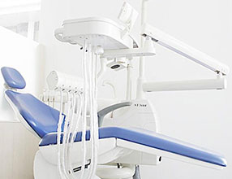
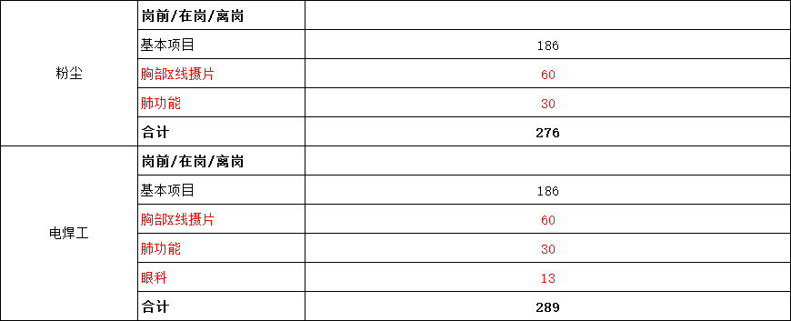

导语：为进一步贯彻落实《中华人民共和国职业病防治法》，保障广大劳动者的身心健康，促进锡西经济稳定、快速地发展，4月份省职防所、市卫计委、市疾控中心组织我市多家具备条件的医疗卫生机构申请职业健康检查资质认证，无锡锡西新城医院是此次资质认证中无锡西部地区唯一一家通过认证的医疗卫生机构，成为江苏省职业健康检查定点医院。
- 定点医院
- 由江苏省卫生和计划生育委员会颁发的“江苏省职业健康检查机构批准证书”，近日已被锡西新城医院裱框悬挂在无锡锡西新城医院健康体检中心的大楼里，这意味着锡西新城已经有了接受职业病体检的资质，将为胡埭从事特殊职业的企业员工提供更为科学、规范、便利的职业健康体检服务。
- 职业病体检提供保障
- 医院共有职业病体检资质医师十余名，并定期邀请江苏省中医院、无锡市三院权威专家团莅临亲检；购置24小时动态心电图机、24小时动态血压计、东芝16排进口螺旋CT，DR直接数字成像系统、骨密度检查仪、听力检测仪、肺功能检测仪、专用体检车等高端检查设备，以保障临床检查及检验质量。
- 涵盖范围广
- 据悉，锡西新城医院开展职业病检查项目、类别涵盖了“接触有害化学因素作业人员职业健康检查、接触有害物理因素作业人员职业健康检查、特殊作业人员职业健康检查”，将为周边的企业单位职工体检带来极大便利。
“江苏省职业健康检查机构批准证书”
“智能健康体检”提升体检效率和效果
- 1.
-
完善体系的标准支撑，实现智能体检
根据健康保健和医疗学科专业，建立了完善体系基础信息标准，实现了体检工作流程信息化、标准化、自动化，主要体现在体检结果的模板化和自动化仪器的无缝对接，科室小结的自动化，主检医生综述建议的自动产生等方面。
- 2.
-
体检流程的全智能处理，提升健康体检效率和效果
对每个体检环节进行严密分析，在质量控制的基础上，实现体检效率的最优化和门诊负荷的最大化。
强大的检前预处理功能，让检前准备工作变得更轻松、快捷；体检过程的条码管理和人工智能，提升了体检医生的工作品质；全自动的主检和报告无人值守打印，让体检报告快速发布成为可能。
- 3.
-
检后健康评估和干预，提升体检中心服务水平
丰富、详实的保健建议，专业的健康评估、健康管理，体现出体检中心的专业和专注，短信、邮件等服务手段，提升体检中心的服务水平；群体性健康状况分析与评估，提升体检中心的服务内涵；连续性长期观察分析，提升体检中心高端服务干预水平。

职业健康监护体检项目收费标准
-

-

-